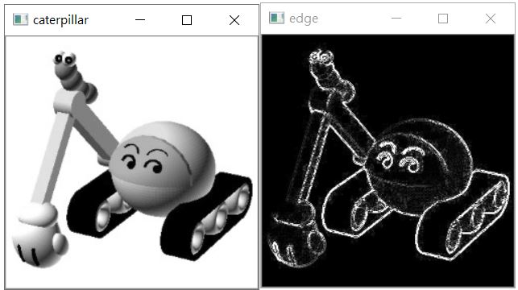
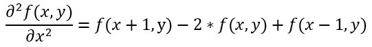
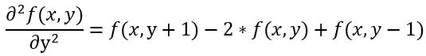
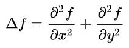

在〈Laplacian 運算（一）〉中，透過 x 軸方向的二階導數，可以對圖像進行 x 軸方向的邊緣偵測，是不是也可以對 y 軸方向求二階導數，然後兩個二階導數相加，來得到兩個方向的邊緣偵測呢？來試試看吧！
import numpy as np
import cv2
img = cv2.imread('caterpillar.jpg', cv2.IMREAD_GRAYSCALE)
x_derivative2 = cv2.filter2D(img, cv2.CV_16S, np.array([
[0, 0, 0],
[1, -2, 1],
[0, 0, 0]
]))
y_derivative2 = cv2.filter2D(img, cv2.CV_16S, np.array([
[0, 1, 0],
[0, -2, 0],
[0, 1, 0]
]))
# 放大兩倍後取絕對值並轉為 uint8
edge = cv2.convertScaleAbs(x_derivative2 + y_derivative2, alpha = 2)
cv2.imshow('caterpillar', img)
cv2.imshow('edge', edge)
cv2.waitKey(0)
cv2.destroyAllWindows()
cv2.convertScaleAbs 可以指定 alpha，這會用來與第一個引數值相乘，得到縮放的效果，這也是函式名稱上為什麼有 Scale 字樣的原因，這邊放大兩倍，可以讓邊緣顯示時更亮一些，可以得到以下的結果：

實際上，可以將用於 cv2.filter2D 的兩個核合併，得到相同的效果：
import numpy as np
import cv2
img = cv2.imread('caterpillar.jpg', cv2.IMREAD_GRAYSCALE)
derivative2 = cv2.filter2D(img, cv2.CV_16S, np.array([
[0, 1, 0],
[1, -4, 1],
[0, 1, 0]
]))
edge = cv2.convertScaleAbs(derivative2, alpha = 2)
cv2.imshow('caterpillar', img)
cv2.imshow('edge', edge)
cv2.waitKey(0)
cv2.destroyAllWindows()
更進一步地，可以直接使用 cv2.Laplacian：
import numpy as np
import cv2
img = cv2.imread('caterpillar.jpg', cv2.IMREAD_GRAYSCALE)
laplacian = cv2.Laplacian(img, cv2.CV_16S)
edge = cv2.convertScaleAbs(laplacian, alpha = 2)
cv2.imshow('caterpillar', img)
cv2.imshow('edge', edge)
cv2.waitKey(0)
cv2.destroyAllWindows()
這些範例的結果都是相同的，只是為什麼它叫 Laplacian 呢？方才的範例中，x_derivative2 相當於每次選擇圖片中的一列（row）來求對應的一組二階導數，也就是說，如果圖片可以使用 f(x, y) 描述，這相當於求 x 的二階偏導數，也就是將 y 視為常數，求 x 方向上的變化。
而基於〈Laplacian 運算（一）〉中的推導，可以知道 f(x, y) 對 x 的二階偏微分會是：

相對地，y_derivative2 相當於每次選擇圖片中的一行（column），最後就相當於求 f(x, y) 對 y 的二階偏微分：

將這兩個公式相加，f(x, y) 的係數變成 -4，而上、下、左、右四個位置的係數都是 1，也就是為什麼方才的範例，可以指定 cv2.filter2D 的核為以下的原因：
[
[0, 1, 0],
[1, -4, 1],
[0, 1, 0]
]
而這符合了〈Laplace 運算〉的定義：

Laplacian 運算是認識圖像邊緣偵測一個很好的入門，知道其原理後，日後接觸其他如 Sobel 運算、Scharr 運算等邊緣偵測方法時，想進一步認識原理或應用，會有很大的幫助。